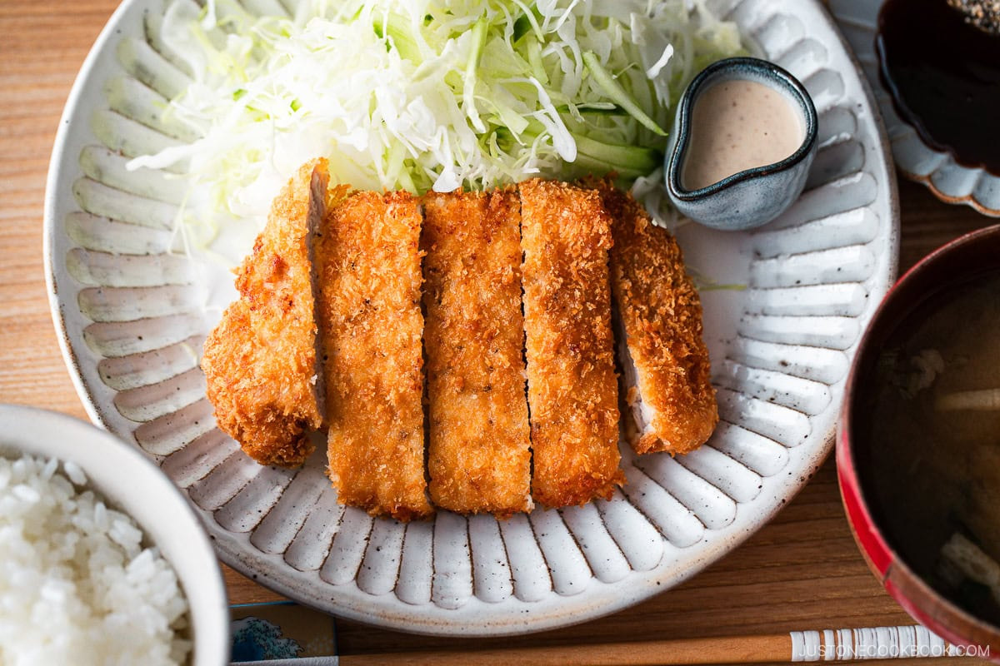

Tonkatsu - Japanese Fried Pork Cutlet

Tonkatsu is a japanese style pork loin cutlet that is breaded with panko breadcrumbs and fried to juicy tender savory
perfection often served as the main dish in a set meal with a bowl of rice, miso soup, shredded cabbage, and sometimes sliced tomato wedges.
the main things that set tonkatsu apart from similar fried cutlet dishes like schnitzel or piccata is the panko breading made from japanese milk bread w
hich absorbs less oil than traditional western breadcrumbs, the fact that it is deep fried instead of being pan fried leading to a more even tender cutlet,
and most importantly the sweet yet tangy sauce giving the dish a unique sweet tangy savory combination that is downright addictively delicious
Ingrideints
- pork loin or tenderlin filet
- salt and black pepper
- flour
- panko breadcrumbs
- egg
- Neutral flavor fry oil
- tonkasu sauce (i reccomend bulldog brand)
Directions
- prepare a breading station with seperate dishes for flour, egg, and panko breadcrumbs
- cut slits along the edges and scour the surface of your cutlets then pound them with a meat mallet (this prevents curling while cooking and leads to a much more tender final product)
- dredge your cutlets in flour
- move your dredged cutlets into the egg wash and evenly coat them in egg
- bread the egg washed cutlets in panko breading
- deep fry for 2 minuits and flip the cutlet and fry for another 2 minuits
- put on a cooling rack for a few minutes then deep fry again for 1 minute on each side
- slice the cutlet top with tonkatsu sauce and serve
<- back